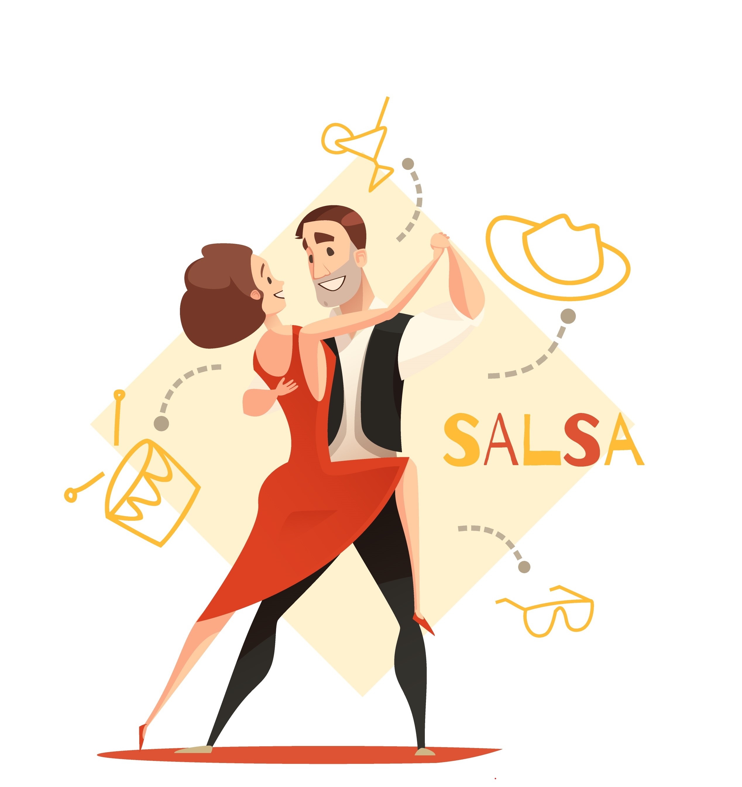
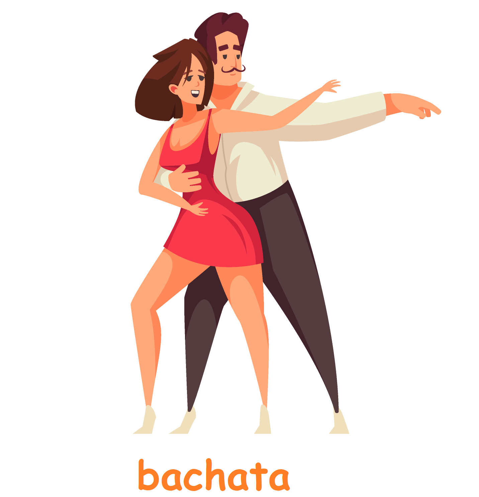
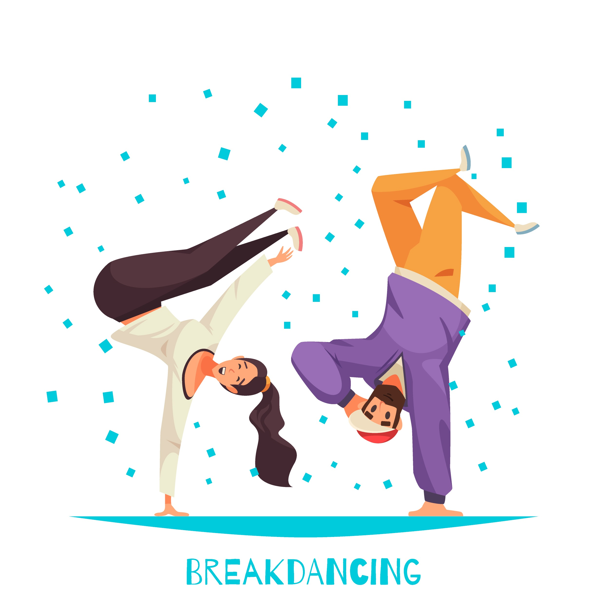
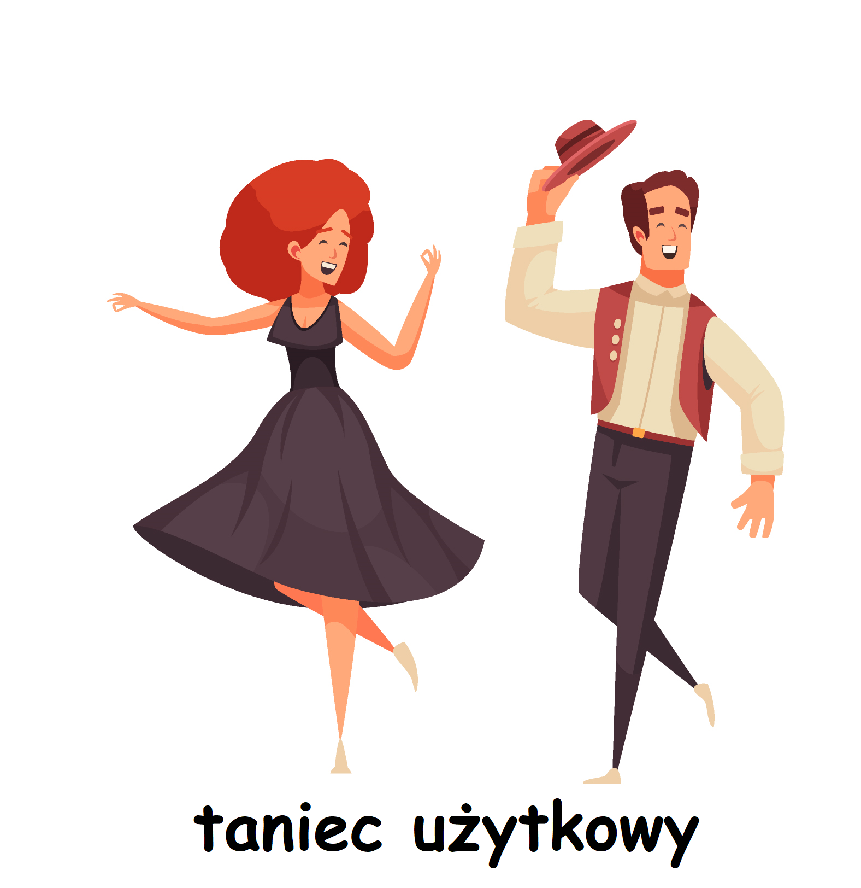
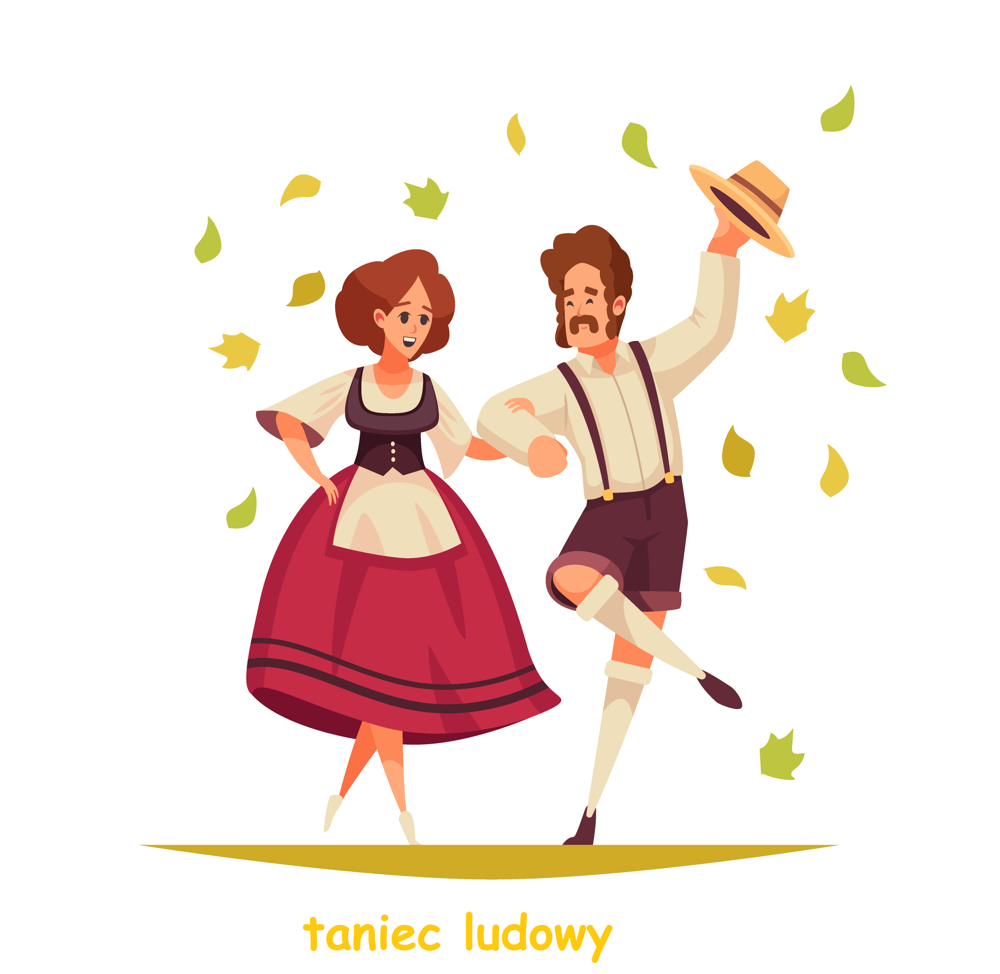
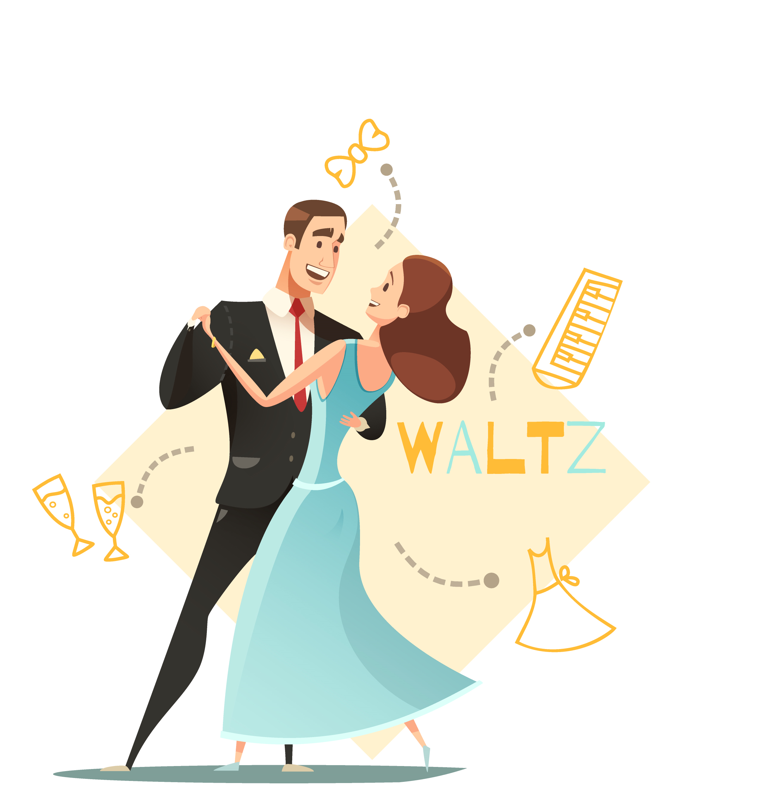
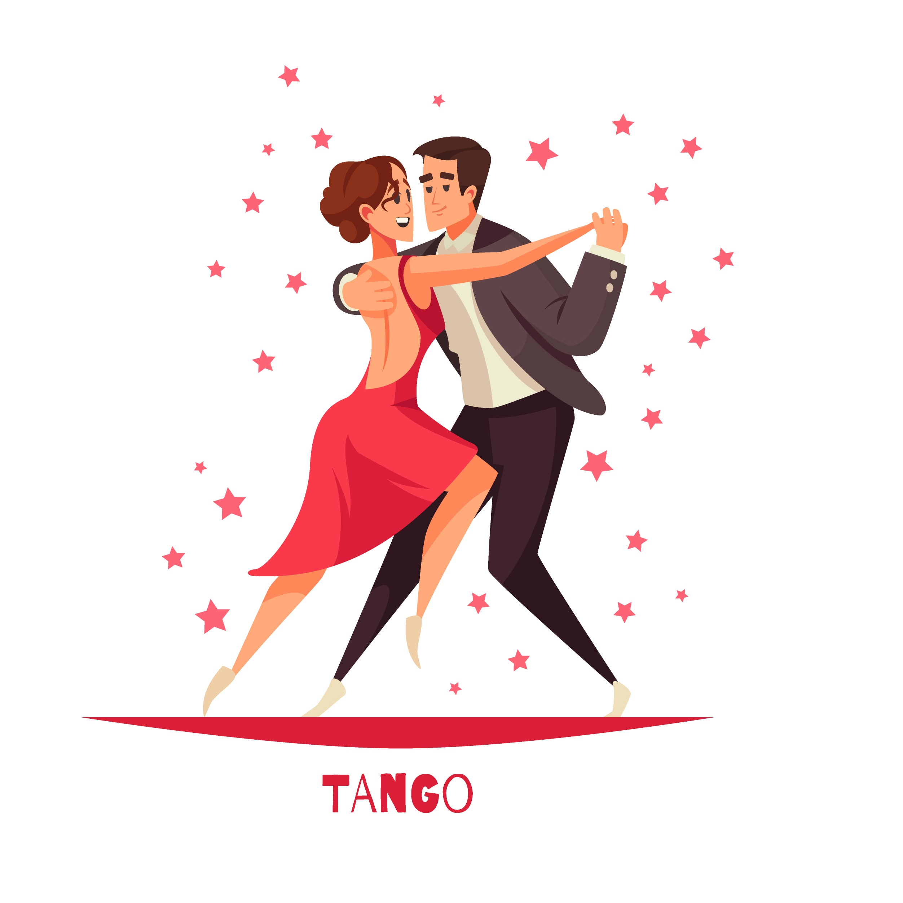
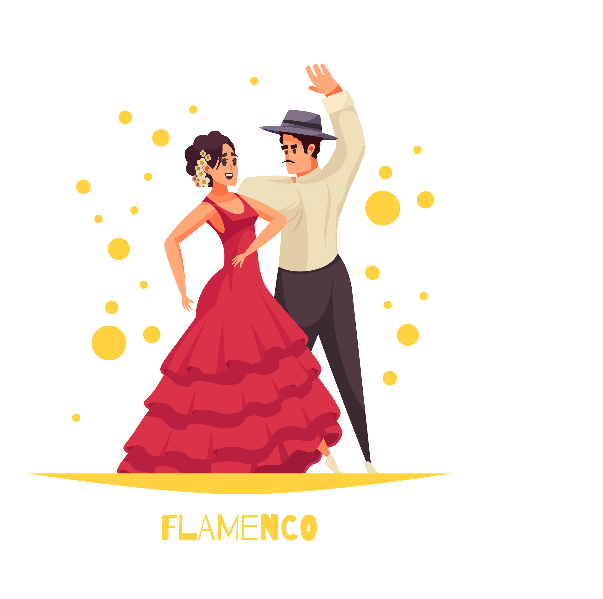
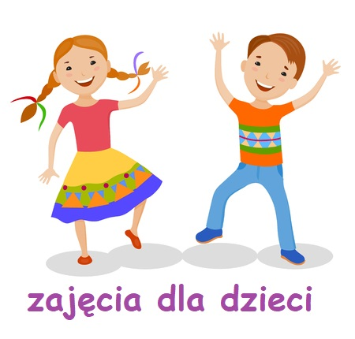

Salsa
Jest popularnym na całym świecie tańcem latyno-amerykańskim o pochodzeniu karaibskim rozwiniętym
szczególnie na Kubie i w Ameryce, tańczonym do muzyki również nazywanej salsą.

Bachata
Rodzaj muzyki i tańca, który powstał i pierwotnie ewoluował w wiejskich i rolniczych terenach Dominikany.
Tematyka piosenek jest przede wszystkim romantyczna i uczuciowa; najczęściej spotykane są utwory mówiące o
smutku i złamanym sercu. Na początku dla określenia nowego gatunku używano terminu amargue, czyli „gorzka muzyka”,
dopóki nie pojawiła się na scenie właśnie bachata – nazwa raczej dwuznacznego pochodzenia
(ale dosyć neutralna nastrojowo). Często jest porównywana do bluesa.

Breakdance
Rodzaj specyficznego i unikatowego tańca z dużą liczbą elementów siłowo-sprawnościowych, oraz kroków
wykonywanych „w parterze”, czyli rękami i nogami (a często całym ciałem) na ziemi.

Taniec użytkowy
Taniec użytkowy jest stosunkowo młodą gałęzią nauczania w szkołach tańca. Zyskał niezwykła popularność,
ze względu na prostotę ruchów i łatwość przyswajania, niezależnie od wieku czy umiejętności przed kursem.

Taniec ludowy
Jest wytworem kultury ludowej danego kraju. Stał się określeniem dotyczącym nie tylko samego sposobu
poruszania się, ale również tradycyjnej muzyki, a dokładnie utworów komponowanych specjalnie z myślą o
konkretnym rodzaju tańca. Wiążą się z tym także obyczaje poszczególnych regionów obejmujące między innymi
barwne stroje, przeznaczone między innymi do tańca oraz ludowe pieśni powiązane z licznymi ceremoniałami
jak też regionalne instrumenty. Każdy taniec ludowy zaliczany jest do dziedzictwa kulturowego danego kraju.

Taniec towarzyski
Forma rozrywki wywodząca się z tańców salonowych i zabaw ludowych, uprawiana od początku XX wieku,
na początku był to taniec dla klas uprzywilejowanych, natomiast tańce ludowe pozostawiano klasom niższym.
Dzięki muzyce jazz, która stała się bardzo popularna w latach 20., zaczęły lawinowo powstawać nowe style taneczne.
Poszczególne tańce różnią się pochodzeniem, charakterem, schematem ruchów, ubiorem i muzyką.

Tango argentino
Rodzaj muzyki i taniec związany z miastem zapoczątkowany w Argentynie i w Urugwaju. Wykonywany zazwyczaj
przez orkiestrę tanga. Charakterystycznym instrumentem muzyki tanga jest bandoneon.

Flamenco
Zjawisko kulturowe, związane z folklorem andaluzyjskich Romów, obejmujące muzykę, śpiew, taniec, strój
i zachowania. Jego tradycja pochodzi z Andaluzji, i tam do dziś można oglądać jego wykonanie.

Zajęcia dla dzieci
To zajęcia, które uczą podstaw tańca, kształtują muzykalność, rozwijają świadomość ciała, poprawiają
sprawność ruchową, koordynację oraz bardzo pozytywnie wpływają na funkcjonowanie dziecka wśród rówieśników.